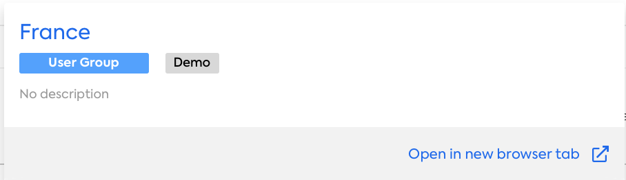
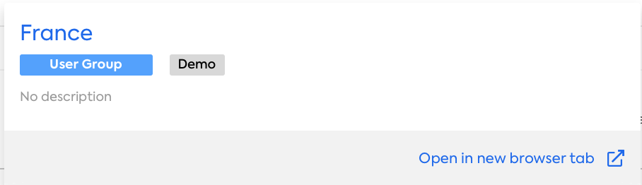

Here’s what I found:

Consider also showing children factsheets
Would you like to ask another question about:
Interrupt with Cancel, Help or Type a question
Example follow on questions:

Consider also showing children factsheets
Interrupt with Cancel, Help or Type a question
Example follow on questions: